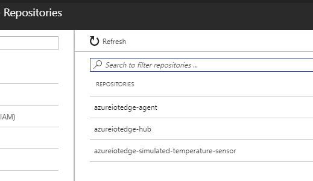
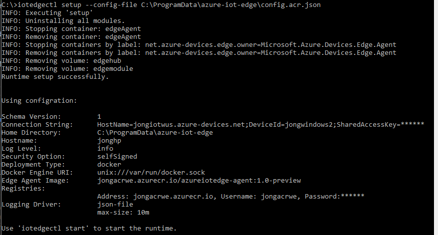
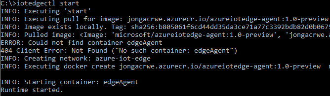
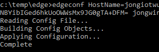
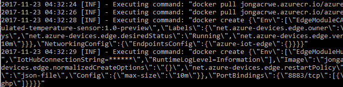
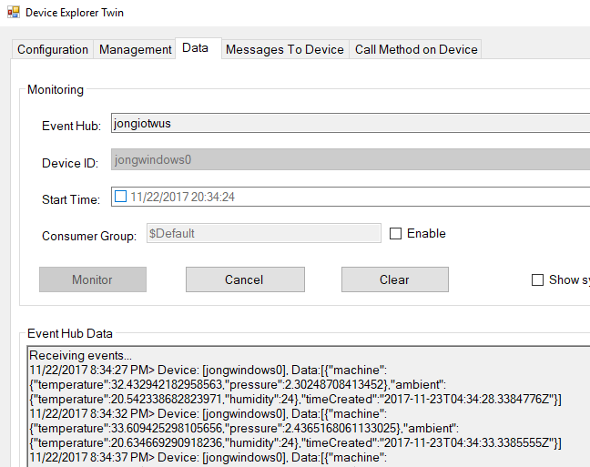

You will likely want to run the Azure IoT Edge Runtime from your own Azure Container Registry (ACR). While this will be officially supported eventually, right now it is not, but there is a workaround. It isn’t officially supported out of the box because the runtime deploys the “edgeHub” container under-the-covers from Docker Hub and there’s no obvious way to override that. I’ve been working with the Azure IoT team over the last couple of days to unblock a customer who has network restrictions that prevent them from running the Edge from anything other than the West Europe Azure Region. Here’s everything that we had to do to get it running. Hopefully this helps you out while the Azure team gets this officially implemented.
Azure IoT Edge Configuration
The first thing you are going to want to do is go to the azure-iot-edge-config repository and learn about the two types of Edge configuration: Runtime and Module configuration. Come back to this post after you have absorbed that info.
Setup Azure Resources
1. Create IoT Hub & Edge Device
2. Create Azure Container Registry
Azure Container Registry Setup
You are first going to pull the Azure IoT Edge containers down to your local machine, tag them and then push them to your own ACR.
Pull Containers
Open a command prompt and execute the following statements to pull the Azure IoT Edge runtime modules down to your machine.
|
Tag Containers
Tag each of the images with ACR URI:
Replace ‘myregistry` with the name of your registry
|
Push Containers
You will now push your newly tagged images to your ACR. But first you need to login to your ACR.
|
You can get the ACR credentials from the Azure Portal, under Access Keys
Now push those images to your ACR.
|
You will now see your images under the ‘Repositories’ section of your ACR.

Modify Config
You now need to change two config files: Runtime and Module Configuration.
Runtime Configuration
When you run iotedgectl setup you can pass it a custom config file, which will contain your ACR credentials. Here’s how to get your config file setup:
1. Copy this file (runtimeconfig.json) to your local machine.
2. Open file and replace all the tokens [[enter …]] with your values for your ACR URI, password, username, connection string and hostname.
3. Save the file.
Now when you setup the Edge Runtime you pass it a --config-file parameter to your new config file.
|

Then run start, and you’ll see it pull from your ACR instead of Docker Hub
|

View the docker logs and you should see this message, which is normal. It says it is waiting for a module config, which we will do next.
|
|
Module Configuration
Now we need to apply a custom configuration to the module twin config in the cloud.
1. Copy this file (moduleconfig.json) to your local machine.
2. Change all of the [[enter ACR URI]] tags with your ACR URI.
3. Save the file
4. Clone this repo azure-iot-edge-config
5. Open command and navigate to scripts/csharp/edgeconf and execute the following:
Make sure you have .NET Core Installed
|
Navigate to bin\Debug\netcoreapp2.0\win10-x64.
6. Run the following command to apply this custom configuration to your device:
|
You will see this output:

If you go back to your docker logs:
|
You will now see the runtime pull that new module configuration file and run all the appropriate containers from your ACR.

And you can verify that the events are being received by using Device Explorer or the CLI monitor-events method described on this post.

That should do it!
Trust me, this experience will get better, but for now this is what we have to deal with.
Please comment or reach out if you have any issues.
Thanks,
Jon